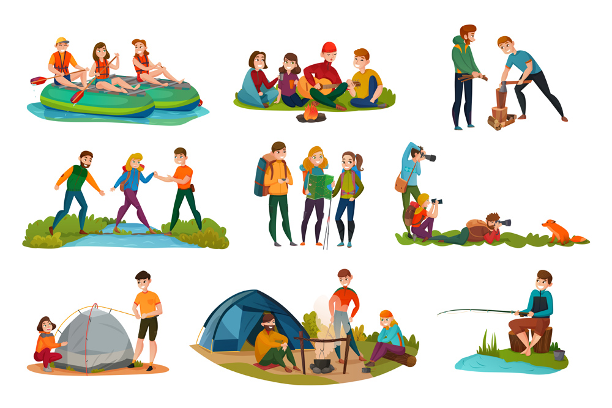

Nov 15, 2018

According to a number of studies carried out by a number of researchers, it is said that for having an effective learning experience, it is important for students to sometimes take a break and relax their minds. Students with the constant pressure and competition to academically excel go through a lot of stress and have to handle a lot of pressure that can have a negative impact on their minds and their bodies. Overstressing or over working for anything is never a good idea and the same is applicable to the process of studying as well. Constant pressure and the monotonous schedule of going through books can end up in students not learning anything at all. Education as a concept is not just about excelling in exams, getting good grades and being the elite student, it is about learning new concepts and being able to understand, grasp and implement them as well.
For instance, if we take an example of a machine that is made to work continuously, for 8-10 hours a day, without any breaks or maintenance sessions. What do you think would be its outcome ? The machine will slowly start to lose the finish that it was giving to its product, eventually its parts will start running out and finally the machine won’t be fit to work anymore. Students are in no way similar to the machines, but the cycles in which both of them work could be related to one another. If the students learn and keep studying for long hours in a single day, without taking any breaks, in the long run it will affect them in a not so good way. The purpose of using the example of the machine was to emphasize on the importance of taking a break.
Some of the main benefits of taking a break for the students are as mentioned:
1. It reduces stress and increases productivity
2. It boosts brain function
3. It helps to develop social skills and many more
Studying and learning on the other hand doesn’t always have to be carried out with books and a classroom. It can also be carried out in a interactive, fun and a non-traditional way. By adopting these new methods, students can learn and absorb most of the knowledge that has been imparted to them.
We at ASKMETRIP in collaboration with Schools, Colleges and Educational Institutions help to organize a number of trips and workshops that have different curricular and learning based activities. These will not only impart knowledge to the students but will also help them to take a break from the traditional methods of learning that could sometimes be too monotonous. Wondering in what ways can you make learning fun? Gladly reach out to us using our official website. We are more than happy to impart this fun way of learning and education.
written by :